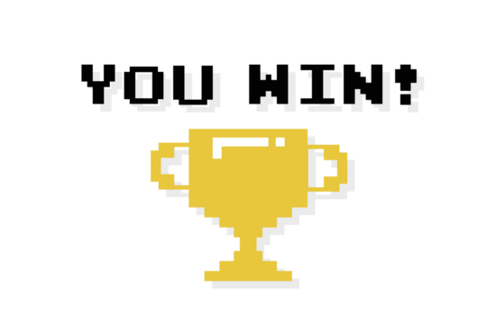
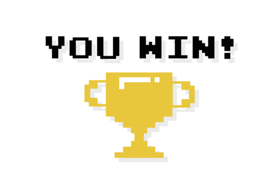
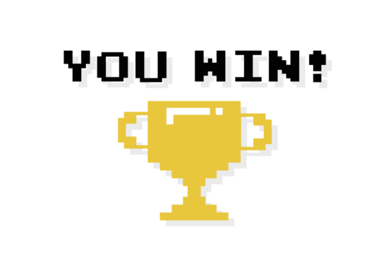
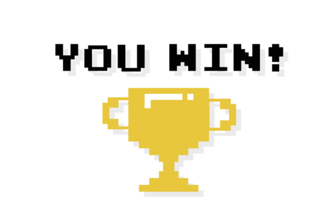

 

a = idle
s = marche à droite
d = courrir à droite
w = marche à gauche
q = courrir à gauche
Ramasser seulement les graines de tournesols et accumuller 2000 points(16graines) et gagné la partie. Si vous ramasser d'autres type de graines vous perdez une vie et le jeu s'arrête quand vous les perdez toutes.